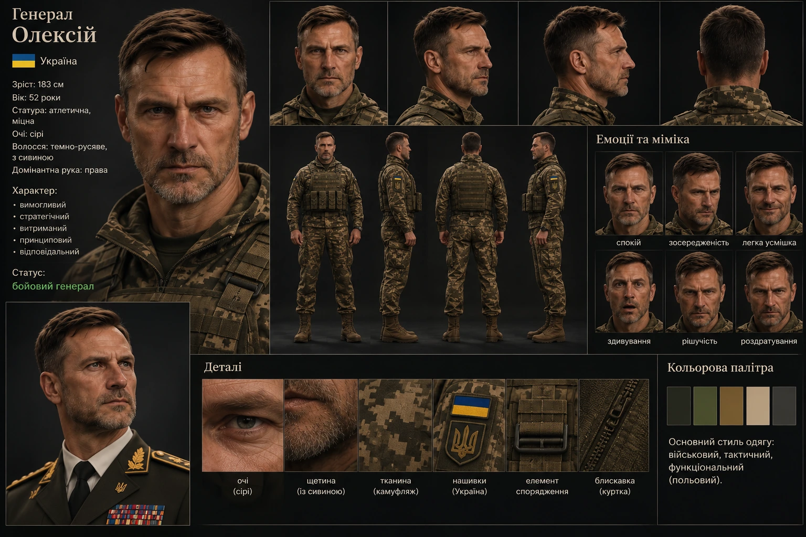

KEY INFORMATION
A commander who stands by his principles
Oleksii is a Ukrainian combat general involved in military command and the coordination of national defence. During the war, he faces not only an external enemy but also the Order’s attempts to influence the army’s command structure and provoke decisions that would cost soldiers their lives.
Name: Oleksii
Rank: General
Role: Combat general
Country: Ukraine
Age: 52
Height: 183 cm
Build: Athletic, strong
Eyes: Grey
Hair: Dark blond with grey
Dominant hand: Right
Character: Demanding, strategic, composed, principled, responsible
CHARACTER AND PRINCIPLES
Responsibility for his people
Oleksii refuses decisions that knowingly increase military casualties. He assesses the situation carefully, demands explanations from subordinates and works to preserve the army’s command structure even when trust within the command is compromised.
His principles are most clearly demonstrated when he rejects the Order’s offer of capitulation despite the direct threat to his own life and those around him.
ROLE IN THE STORY
Defending the country and confronting betrayal
In the military chapters, Oleksii leads operational command, analyses aerial attacks and organises responses to missiles and attack drones. After the Order’s network is exposed, he stops dangerous orders, gradually takes control of the most compromised areas and helps stabilise the army.
His longtime friend, General Mehmet, becomes the messenger of the Order’s ultimatum. Oleksii refuses to surrender. Marat later offers him a place in the soldiers’ brotherhood and leaves him a thought-link bracelet. By accepting this support, the general gains a way to coordinate with the Characterники.
Key events
- Stopping orders that could have caused heavy losses among Ukrainian troops.
- Receiving a warning from Mehmet about the Order’s plans and its offer of capitulation.
- Rejecting capitulation despite the threat of annihilation.
- Meeting Marat and receiving a thought-link bracelet.
- Coordinating defence during mass missile and drone attacks.
- Stabilising military command after the coup is exposed and its organisers are arrested.
Visual canon
Ukrainian field military uniform, camouflage, Ukrainian patches and insignia. Short dark-blond hair with grey, grey eyes and a strong athletic build. The formal dress uniform appears only as a separate portrait reference in the author-supplied sheet.